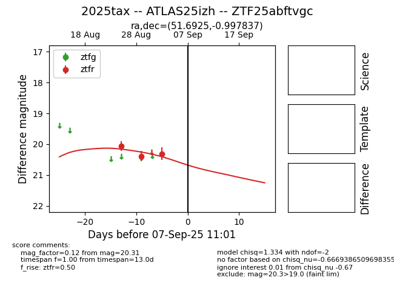

FINK: ZTF25abftvgc
Lasair: ZTF25abftvgc
ALeRCE: ZTF25abftvgc
TNS: 2025tax
YSE: 2025tax
ZTF25abftvgc (ztf,fink)
2025tax (tns,yse)
ATLAS25izh (atlas)
equatorial (ra, dec) = (51.6925,-0.99784)
galactic (l, b) = (184.4858,-44.51656)

last ztfr=20.31
3 ztfr detections